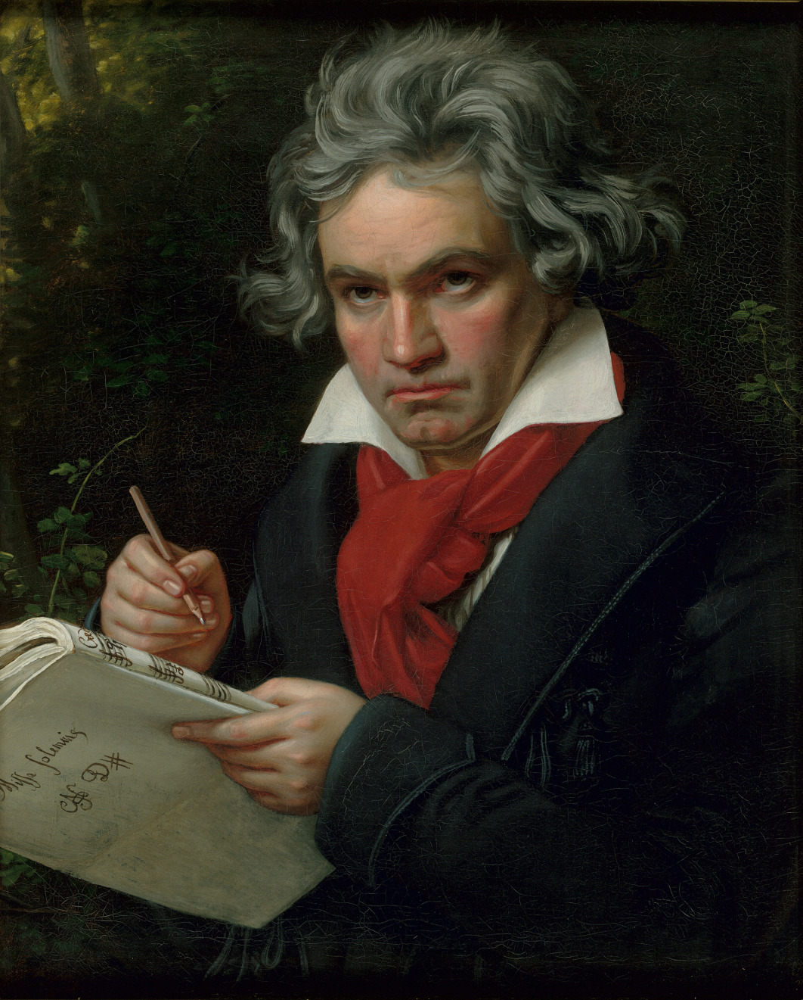
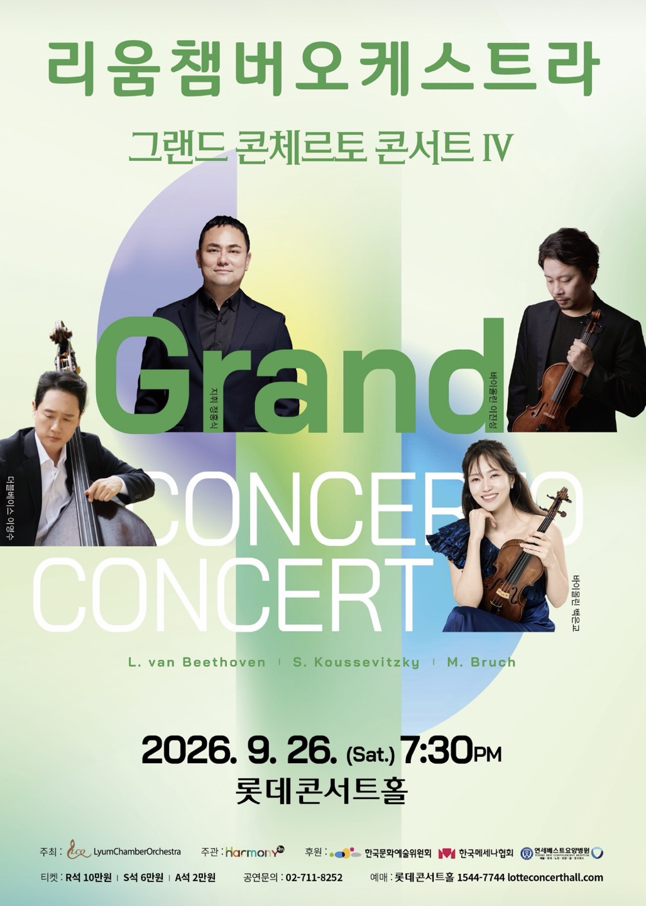
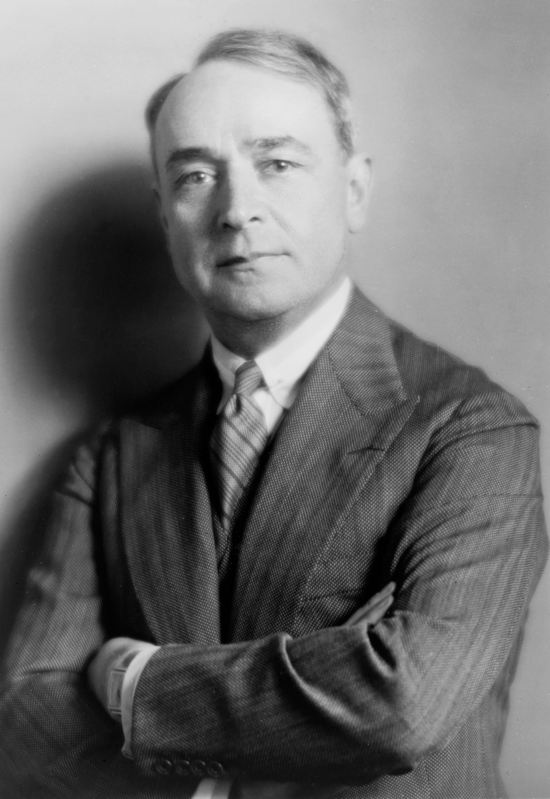
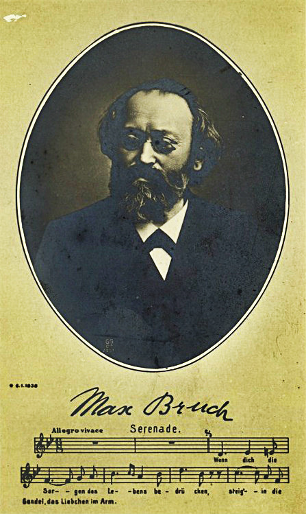

Ludwig van Beethoven
루트비히 판 베토벤 · 1770–1827
빈에서 교향곡·오페라·협주곡에 몰두하던 시기의 바이올린 협주곡.
- 1806 · Op.61 · 베토벤 35-36세

시간은 참고 연주의 대략적인 길이 · 나이는 표기한 작곡·개작·출판 시점의 만 나이

루트비히 판 베토벤 · 1770–1827
빈에서 교향곡·오페라·협주곡에 몰두하던 시기의 바이올린 협주곡.

세르게이 쿠세비츠키 · 1874–1951
지휘자로 널리 알려지기 전, 더블베이스 독주자로 활동하던 시기의 협주곡.

막스 브루흐 · 1838–1920
코블렌츠 지휘자 시기의 협주곡. 초연 뒤 요제프 요아힘의 조언으로 개정.
팀파니가 조용히 네 번 두드리는 리듬으로 시작. 제1악장 곳곳에서 변형되어 다시 나타나는 리듬. 바이올린과 오케스트라가 긴 선율을 주고받는 대목이 감상 포인트.
베토벤이 빈에서 피델리오·교향곡·협주곡 등 큰 규모의 작품에 몰두하던 1806년, 바이올리니스트 프란츠 클레멘트를 위해 작곡. 청력 저하가 진행되고 있었지만 연주와 작곡 활동을 이어가던 시기.
같은 해 12월 클레멘트가 초연. 곧바로 표준 레퍼토리가 되지는 않았으며, 1844년 요제프 요아힘과 멘델스존의 런던 연주가 재평가의 중요한 계기. 앞서 착수한 다른 바이올린 협주곡은 단편으로 남아, 이 곡은 베토벤이 완성한 유일한 바이올린 협주곡.
작곡·판본 자료 ↗낮은 음역부터 높은 음역까지 폭넓게 펼쳐지는 더블베이스의 노래하는 선율. 쉬지 않고 이어지는 제1·2악장과 빠른 마지막 악장의 대비.
지휘자로 유명해지기 전, 더블베이스 독주자로 유럽 무대를 넓히던 시기에 작곡. 1902년 착수, 1905년 완성, 모스크바 초연의 독주는 작곡가 자신. 완성한 해에 결혼한 나탈리야에게 헌정.
독주 악기로 주목받기 어려웠던 더블베이스의 레퍼토리를 늘리려는 목적. 초기에는 감상적이라는 비판과 표현력에 대한 호평이 공존했으며, 이후 주요 더블베이스 협주곡으로 정착.
작곡·판본 자료 ↗쉼 없이 이어지는 제1악장 Vorspiel과 제2악장 Adagio. 느린 악장의 긴 선율에 대비되는 마지막 악장의 강한 춤 리듬과 화려한 바이올린 기교.
코블렌츠에서 지휘자로 일하던 젊은 브루흐가 1866년에 첫 판본을 완성하고 직접 초연 지휘. 작품의 완성도를 높이기 위해 바이올리니스트 요제프 요아힘의 조언을 받아 독주부와 악곡을 수정.
개정판은 1868년 브레멘에서 요아힘이 연주. 브루흐가 작곡한 세 바이올린 협주곡 가운데 특히 널리 정착한 작품. 처음의 구상에 연주자의 실질적인 조언이 더해진 협업 사례.
작곡·판본 자료 ↗with ES Baek · JY Choi
앙코르 없음
독주 바이올린보다 더 오래 남은 오케스트라의 넓은 선율과 긴 호흡. 협주곡의 큰 흐름을 이끄는 오케스트라가 특히 인상적이었던 공연.
영상으로 예습할 때 먼저 들렸던 제3악장 후반의 빠른 더블베이스 패시지. 공연장 가까운 자리에서는 특정 구간을 고르기 어려울 만큼 인상 깊었던 곡 전체. 영상에서는 느끼기 어려웠던 낮은 음의 울림과 공간감, 높은 음역의 노래하는 선율과 하프의 음색도 기억에 남은 공연.
제1악장에서 점차 넓어지는 오케스트라의 울림. 공연장에서 더 선명하게 들렸던 제2악장의 길고 따뜻한 선율. 마지막 악장에서 인상 깊었던 빠른 현 이동과 힘찬 춤 리듬.
큰 홀에서도 오케스트라 위로 또렷하게 전해진 바이올린 소리. 기억에 남은 힘 있는 음색, 정확하게 들린 음정과 각 음의 표현.